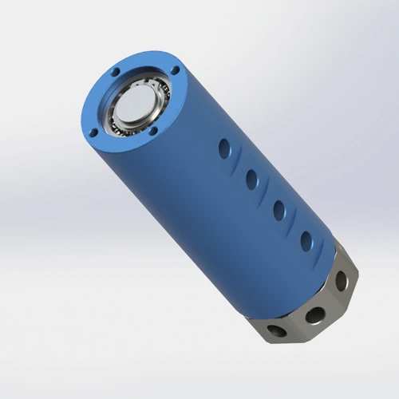

How to select a pneumatic rotary joint for automation rotary tables and indexing stations: multi-passage air transfer, slip ring integration, channel count planning, and seal selection for indexing vs. continuous rotation. Based on 200,000+ units of Begapunk field experience.
Who this is for: Automation engineers, machine builders, and system integrators designing rotary indexing tables and multi-station assembly equipment.
On a rotary indexing table, multiple fixtures need air at different times — clamping for machining, vacuum for part pickup, blow-off for debris removal, and sensor air for position verification. Without a rotary union, each fixture needs its own hose bundle, which twists, kinks, and fatigues within days. A multi-passage rotary joint acts as a central manifold: the stationary side connects to the machine's air supply, and the rotating side distributes air to each station through independent internal passages.
The challenge is not just transferring air — it is keeping 4–8 independent channels from cross-contaminating while sharing a 30–50 mm diameter body. A leak between clamp and vacuum channels means the gripper drops parts. A pressure drop in the blow-off channel leaves chips on the fixture. And if the rotary joint fails, the entire indexing cycle stops, scraping the production batch.
At Begapunk, automation rotary tables account for roughly 25% of our multi-passage rotary joint sales. The most frequent specification error is not the pressure or RPM — it is the channel count. Machine builders specify exactly the channels needed today, with no room for the sensor or gripper the customer adds 12 months later.

Typical requirement2 to 8 passages for clamping, vacuum, blow-off, and separated station control on rotary indexing tables.Map every pneumatic function before selecting the model:
Rule: Count every current function plus one spare channel. Adding a spare passage now is cheaper than replacing the entire joint in 18 months when the customer adds a new gripper or sensor. A 5-passage joint costs 15% more than a 4-passage; replacing a 4-passage with a 5-passage costs 300% more.
The seal material depends on how the table moves, not just the maximum RPM:
Reference: SMRP guidelines suggest that rotating seals in continuous-duty applications should use PTFE or equivalent high-temperature materials, with a 20–30% safety margin on rated RPM.
Many automation tables need both pneumatic and electrical transfer — sensors, encoders, or servo signals on the rotating fixtures. Two approaches:
Critical: Verify radial clearance. A 30 mm bore rotary joint plus a 25 mm slip ring needs 60+ mm total radial space. Check your CAD model before specifying.
| Station Type | Common Function | Selection Focus | Begapunk Direction |
|---|---|---|---|
| Small indexing table (4–6 stations) | Clamp, release, blow-off | 2–3 passages, compact body, easy mounting, FKM seals acceptable | BP-2P-0001 or BP-3P-0004 |
| Multi-station carousel (8–16 stations) | Several independent air lines | 4–8 passages, low leakage, flange mount, anti-rotation support | BP-4P-30-0001 or BP-8P-0001 |
| Sensor-equipped station | Air plus electrical signal routing | Pneumatic-electric integration, signal isolation, compact envelope | BP-3P-S06-0001 or custom pneumatic-electric design |
| High-speed continuous rotary | Continuous clamping and actuation | PTFE seals, 100–500 RPM rated, low friction torque | BP-2P-95-0001 (PTFE standard) or custom high-speed layout |
Machine builders specify exactly the channels needed today: clamp, unclamp, vacuum, blow-off. No spare. When the customer adds a sensor or a new gripper 12 months later, the entire rotary joint must be replaced — disassembling the table, re-routing hoses, and re-commissioning the machine. Rule: Always add one spare passage. A 5-passage joint costs 15% more than a 4-passage; replacing a 4-passage with a 5-passage costs 300% more in labor and downtime.
FKM (fluoroelastomer) seals are rated for <200 RPM and work well on indexing tables with dwell periods. But on continuous-rotation stations at 300–500 RPM, FKM overheats and hardens within 2–3 weeks. The seal lip cracks, air leaks between channels, and the gripper drops parts. Rule: Specify PTFE composite seals for any station above 200 RPM or with continuous rotation. PTFE handles the heat and maintains low friction torque for precise indexing.
Automation tables often need both pneumatic and electrical transfer. Engineers specify a 40 mm bore rotary joint and a 35 mm slip ring, then discover they need 80 mm radial clearance — but the table hub only has 60 mm. The result: a last-minute custom design that delays delivery by 4–6 weeks. Rule: Verify radial clearance in your CAD model before specifying. Begapunk provides free 3D STEP files for fit verification. Check clearance, port direction, and anti-rotation bracket position before placing the order.
Flange mount is preferred for rotary tables because it provides rigid, vibration-resistant attachment. The bolted connection will not loosen under indexing shock loads. Through-bore options (e.g., 30 mm bore on BP-4P-30-0001) allow wiring, shafts, or coolant lines to pass through the center — keeping the machine envelope clean and organized.
The anti-rotation bracket prevents the stationary body from spinning with the table. But it must allow ±2 mm radial float for self-alignment. A rigid bracket locks the joint in place, transferring table misalignment directly to the seals. Design tip: Use a slotted mounting hole or a rubber washer between the bracket and the fixed frame to allow float.
Do not wait for visible leaks or channel cross-contamination. Schedule seal replacement based on cycle count:
Keep replacement seal kits at the workstation. A 15-minute seal change becomes a 2-hour job if the technician must walk to central stores and discover the wrong part number.
Send your station count, pneumatic circuit diagram, pressure, RPM, indexing behavior, and mounting space. Begapunk can help choose a standard model or design a custom passage layout with 3D fit verification.
Common functions include clamping, unclamping, vacuum pickup, blow-off, gripper control, sensor air, and pneumatic actuator supply. Each function typically requires its own independent passage to prevent cross-contamination and pressure interference between stations.
A multi-passage rotary union should be selected when different air functions must remain independent or when several stations need separate control lines. A good rule is to count every current function plus one spare channel for future tooling changes. Adding a spare passage now is cheaper than replacing the entire joint in 18 months.
Yes, if the passage layout is planned correctly. Each independent air function should have its own channel. The rotary union acts as a central manifold: the stationary side connects to the machine's air supply, and the rotating side distributes air to each fixture or station through internal passages.
Yes. Begapunk offers pneumatic-electric integrated designs (e.g., BP-3P-S06-0001 with 3 air passages + 6 electrical circuits). When signal count and air passage count are known, a custom layout can be designed with proper separation between pneumatic and electrical channels to prevent interference.
The most common mistake is not adding a spare passage. Machine builders specify exactly the channels needed today — clamp, unclamp, vacuum, blow-off — with no room for future upgrades. When the customer adds a sensor or a new gripper 12 months later, the entire rotary joint must be replaced. Another common error is using FKM seals on continuous-rotation stations above 200 RPM, causing overheating and seal hardening within weeks.
Technical Note: All pressure ratings and RPM specifications referenced in this article are based on Begapunk BP-series standard pneumatic rotary joints. Actual performance depends on operating conditions and maintenance practices. For applications outside standard ratings, consult factory engineering before specification. Last updated: June 11, 2026.